Body - Front Door Lock Replacement Procedure Update
SI B 51 27 10Body Equipment
August 2010
Technical Service
SUBJECT
Updated Repair Procedure to Replace Front Door Locks
MODEL
E82, E88 (1 Series)
SITUATION
Revised procedure for replacing left or right front door locks.
CAUSE
The revised Repair Instructions will be available with ISTA D2.22.0 from about September 2010. The newly created Repair Instruction is described in the procedure below, and is applicable immediately (until ISTA D2.22.0 is available).
CORRECTION
Repair Instruction 51 21 090 "Remove and refit/replace the door lock on the left or right front door" has been revised. There is a new procedure for partially removing the window lifter so that the door lock can be removed.
PROCEDURE
The following procedure describes how to partially remove the window lifter so that the door lock can be removed.
Refer to the attachment document, B512710, for detailed repair procedures.
WARRANTY INFORMATION
For information only
The flat rate unit allowance for the door lock replacement (51 21 090 and 51 21 590) have been revised to reflect the update repair procedure.
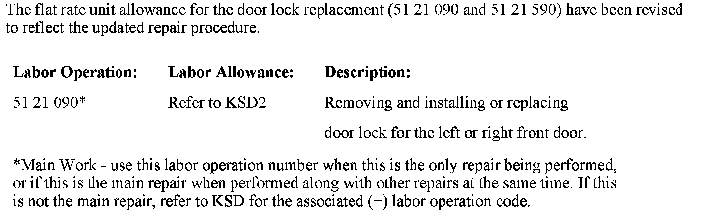
ATTACHMENT
B51 27 10 Attachment
August 2010
PROCEDURE
The repair procedures shown are for the driver's side door.
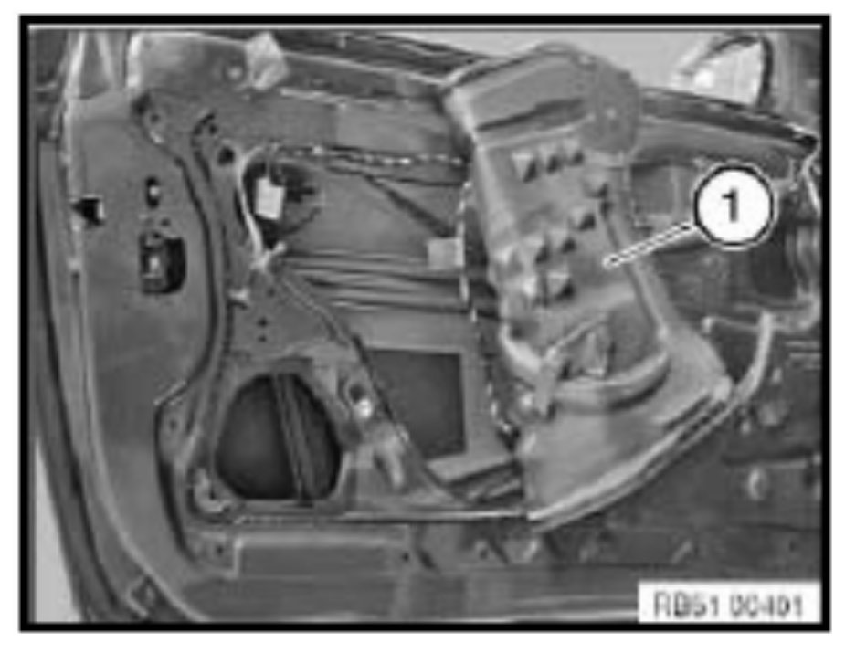
1. Remove the door panel and pull back the rear portion of the noise insulation (REP51 48 060).
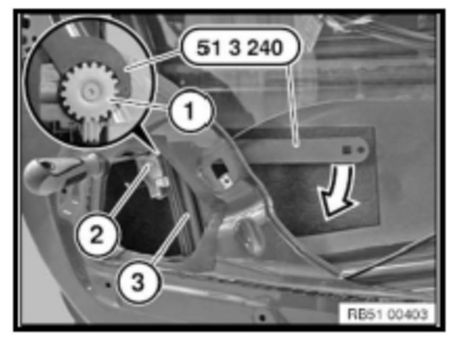
2. Lower the window motor as shown in the picture (3).
Disconnect the electrical plug connector to the window motor. Loosen the clip bolt (1) using special tool 51 3 240 (P/N 83 30 0 494 251) on the gear ring (2). Reconnect the electric plug connector to the window motor. Move the window upwards as far as it will go. Disconnect the electric plug connector to the window motor. Tightening torque E82, E88: 10 Nm
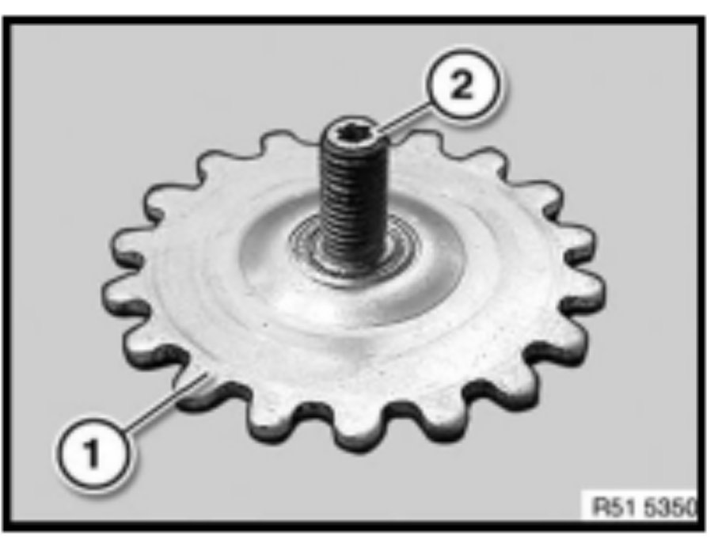
3. Loosen the clip bolt on the gear ring (1), until it can be turned by the internal torx (2).
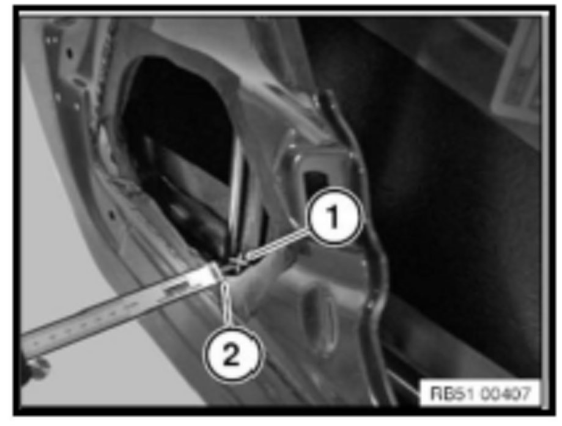
4. Locate the measuring point between the window lift rail (1) and inner door panel (2). Measure the distance between the window lift rail (1) and inner door panel (2). Record the measurement for future use during step (7).
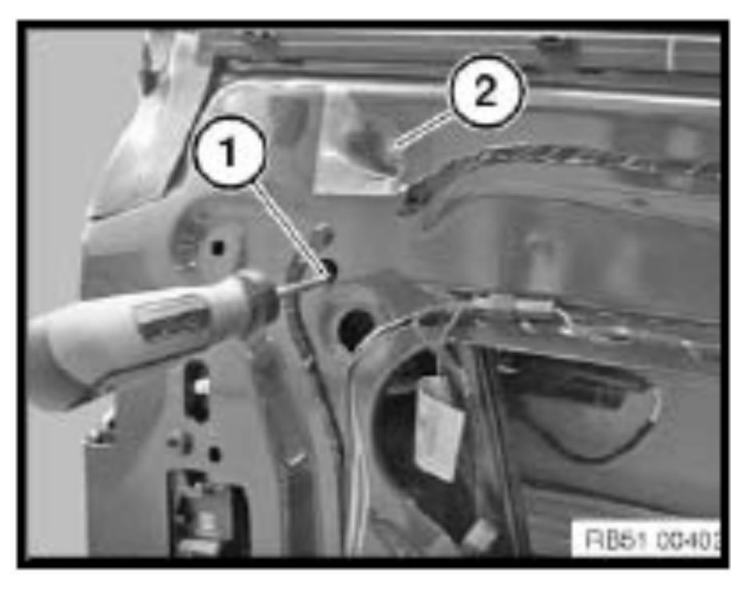
5. Loosen the clip bolt (1) on the internal torx. Detach the film and loosen the underlying nut (2).
Tightening torque 10 Nm.
Installation note:
If necessary replace the damaged film.
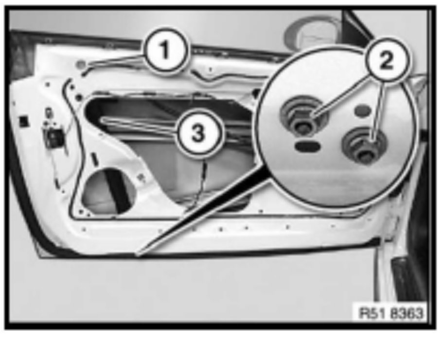
6. Loosen both nuts (2). Tightening torque 10 Nm.
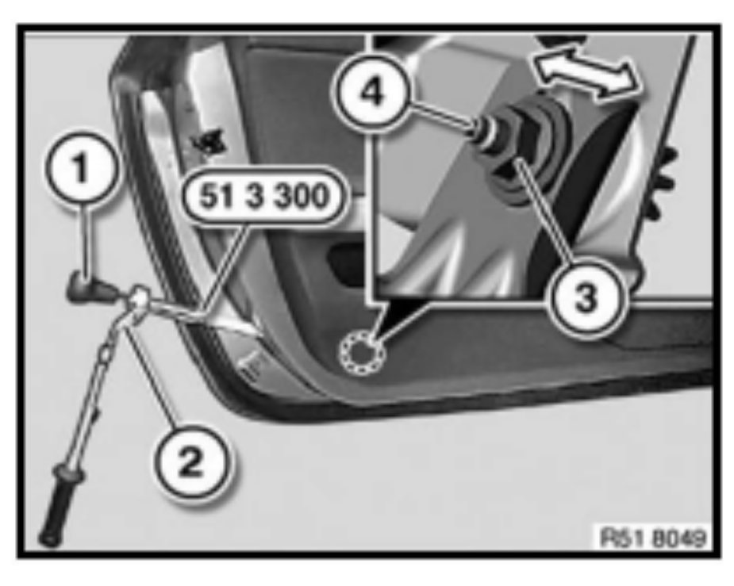
7. Loosen the nut (3) with the ratchet (2) of special tool 51 3 300.
Turn the knob (1) of special tool 51 3 300 (P/N 83 30 0 495 590) and set the distance measurement you recorded earlier in step 4.
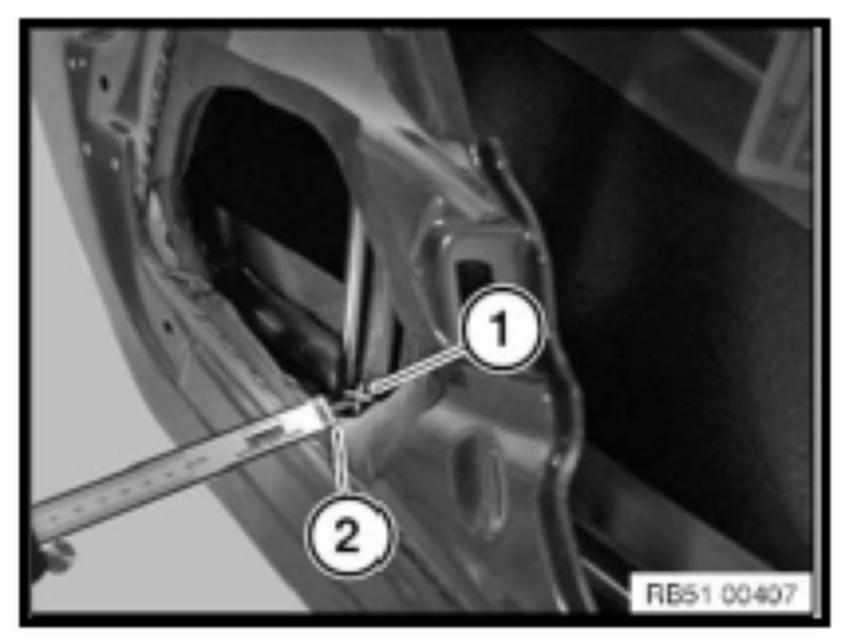
8. Check the distance measurement between the window lift rail (1) and inner door panel (2); if necessary repeat the previous setting.
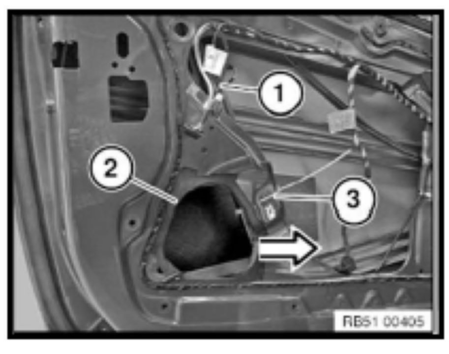
9. Pull the rear guide rail (1) of the window regulator from the bottom area in the direction of the arrow until the opening (2) on the inner door panel is accessible.
Secure the rear guide rail (1) using a cable tie (3) to the inner door panel.
Mask off the opening (2) on the inner door panel with adhesive tape.
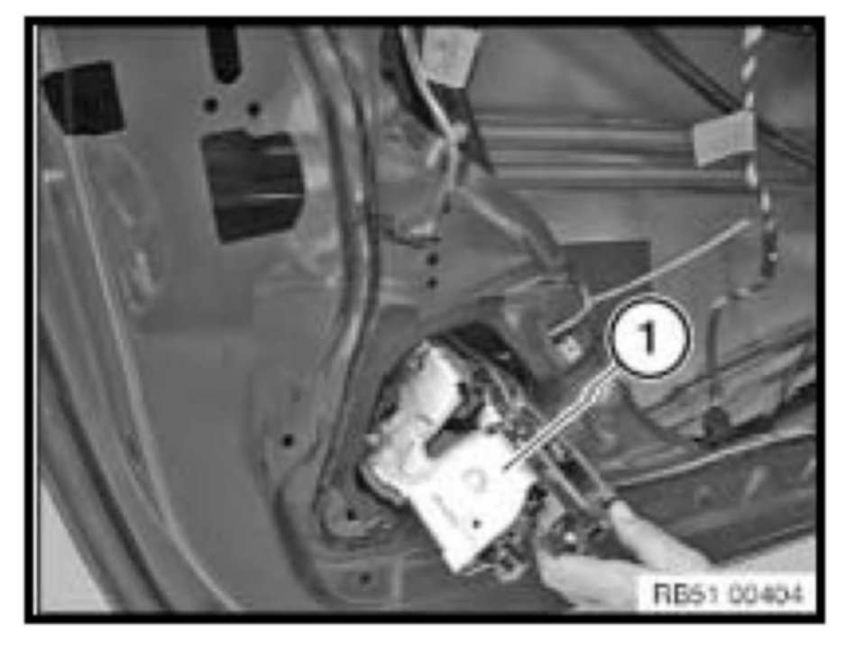
10. Remove the door lock (1) through the opening in the inner door panel.
Be careful not to damage the door lock seal during the removal process.